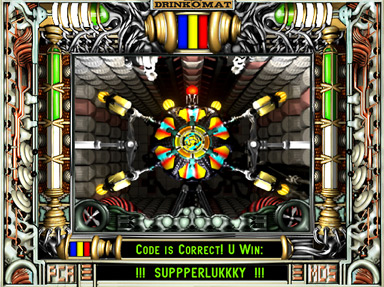

|  |
.......................... PCA
Aufbauend auf der Idee der "einarmigen Banditen" entwickelte Jan Wachter
einen interaktiven "Drinkomat", einen Cocktailspender namens PCA. Ein aufwendig animierter, weiblicher Avatar fordert den "Spieler" auf, drei Farbwerte in
Prozenten einzugeben. Wenn die Mischung der Farbanteile stimmt, spendiert der PCA dem Gewinner einen Cocktail.
Der PCA vereinigt die Laster der Trunksucht und des Spiels und führt durch dessen geschickte Kombination zu einer neuartigen Doppelabhängikeit. In einem gediegenen Design aus Mahagoni-Imitat und Kunstleder befriedigt der PCA selbst gehobene Ansprüche und zeichnet sich durch einfache Handhabung und liebevolle Gestaltung des Kommunikationsfensters aus.
Winning award Kat. 1, 2003
|